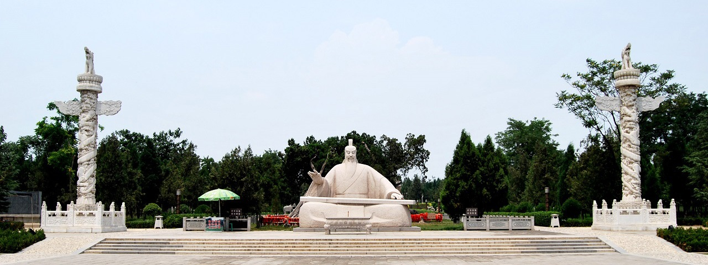
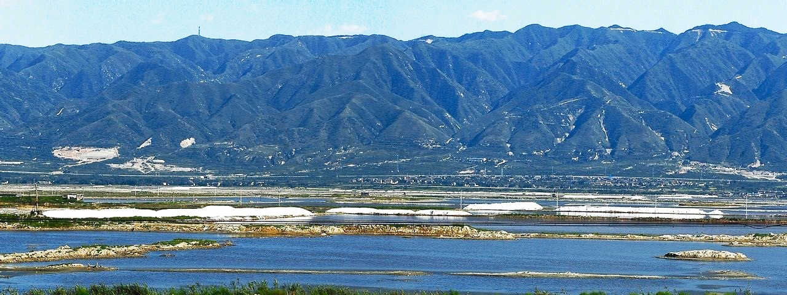

- 

- 
舜 帝 陵
舜帝陵位于山西省运城市的鸣条岗西端，为中华民族“五帝”之一的舜帝的陵庙。2006年5月被国务院公布为全国重点文物保护单位，为国家AAAA级景区。分舜帝大道、舜帝广场、舜帝公园、舜帝陵庙四大部分。陵冢启于禹时，陵庙始建于唐开元二十六年（738年）。
黄 河 铁 牛
黄河大铁牛位于永济古蒲州城西门外黄河滩上，距普救寺约4华里。唐朝时，又重建了浮桥，并冶铸了这尊“镇河大铁牛”，置于古蒲州城遗址西门外黄河滩上作为护桥之神。铁牛共八尊，现已出土了有四尊，每尊身长丈余，重约一吨，它们均面向黄河排列。同时出土的还有铁山、铁柱、铁人等，造型生动逼真，形象动人。
五 老 峰
五老峰位于山西省永济市市区东南16公里的中条山脉，地处晋、秦、豫三省交汇之黄河金三角。五老峰原名五老山，因古代五老在此为帝王授《河图》《洛书》而名。
盐 池
运城盐池是由于造山运动和地壳变化，中条山北麓造成断裂，出现了一个狭长的凹陷地带，逐渐形成湖泊，天长日久，水中的钾盐、石灰石、镁盐、硫酸盐以及食盐慢慢与早期淤积层结合，经过长期自然蒸发作用，盐类沉淀，结成了很厚的矿石层，才形成了盐湖。